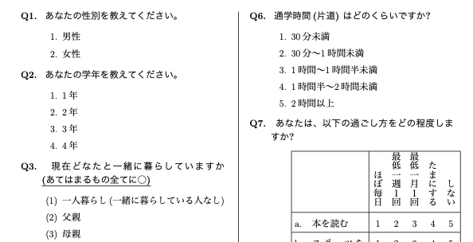
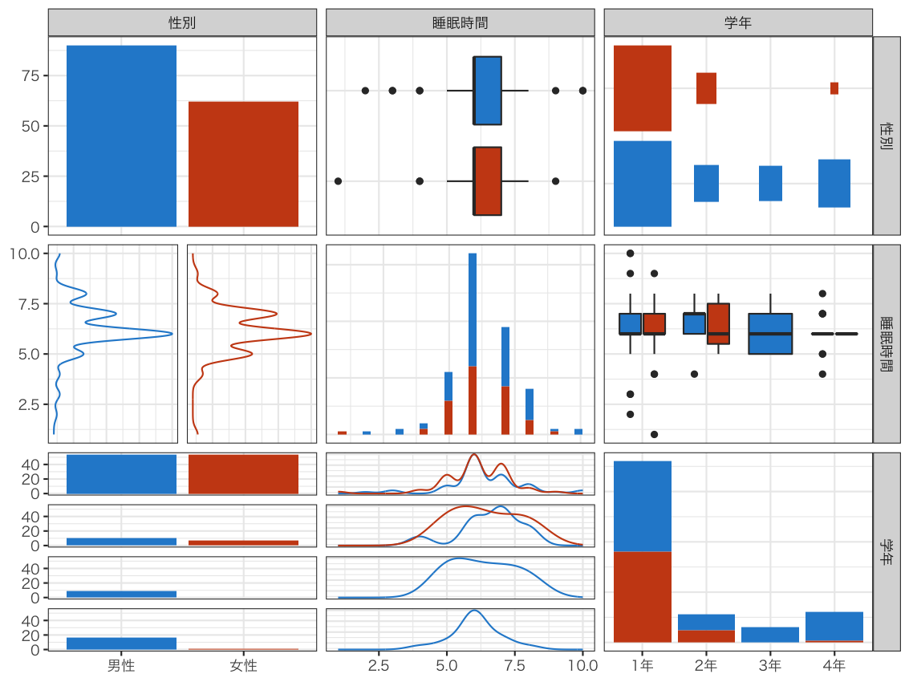

| 項目 | 内容 |
|---|---|
| 調査テーマ | ライフスタイル |
| 実施時期 | 2003年 |
| 対象 | 母集団が不明瞭 |
| 主に、たまたま協力が得られた社会学科学生 | |
| 調査方法 | 質問紙法・自記式調査法 |
| 標本サイズ | n=153 |
| 分析環境 | SAS (実習において SAS を利用するようにとの指示を受けた) |
| その他 | 授業は朝1限指定、授業時PC教室でのみ SAS で分析可能 |
| 時間不足のため CMS (Plone, Zope) 立ち上げ | |
| 分析結果を共有、レポート作成を遠隔共同作業でしのぐ |

図1: 調査票の一部 ( \(\LaTeX\) 組版)

図2: 学生生活調査2003 nu03 ライフスタイル